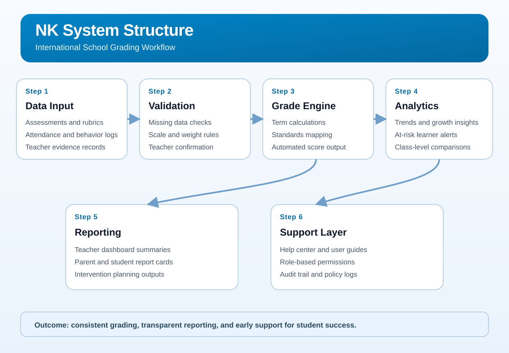

Teaching Philosophy
Auto PlayCore Belief
Student-Centered Learning
Every learner can grow with guidance, voice, and meaningful learning experiences in a safe and inclusive classroom.
Teaching Portfolio
My teaching approach is student-centered and inquiry-based, aligned with International education and the Cambridge curriculum. I design structured, engaging lessons that build strong conceptual understanding while developing critical thinking, creativity, and problem-solving skills. Through project-based learning and guided exploration, students become confident, independent learners. I integrate technology purposefully to enhance collaboration, computational thinking, and responsible digital citizenship. I foster inclusive classrooms where student voice is valued and every learner is supported to achieve their personal best.
Teaching Philosophy
I believe education should empower students to become confident, capable, and responsible learners in a rapidly evolving world. Every child has unique strengths and the capacity to grow when provided with meaningful learning experiences, supportive guidance, and a safe environment where their voice is valued.
My teaching is student-centered and inquiry-driven. I design learning experiences that encourage exploration, creativity, and critical thinking, allowing students to actively construct understanding rather than passively receive information. Through project-based learning and real-world problem solving, students develop independence, resilience, and a lifelong love of learning.
Technology is integrated purposefully in my classroom as a tool for creation, collaboration, and innovation. I guide students to become not just consumers of technology, but thoughtful creators who use digital tools responsibly and ethically. Developing computational thinking, digital citizenship, and problem-solving skills prepares learners for future academic and professional success.
I am committed to inclusive education that respects diverse learning needs, cultures, and perspectives. I strive to create classrooms built on trust, respect, and positive relationships where students feel safe to take risks and grow both academically and personally.
As an educator, I continuously reflect, learn, and adapt my practice to ensure that my teaching remains relevant, engaging, and impactful. My goal is to nurture learners who are curious, collaborative, and confident in shaping their own futures.
Teaching Philosophy
Auto PlayCore Belief
Every learner can grow with guidance, voice, and meaningful learning experiences in a safe and inclusive classroom.
Experience

2024-Present
Digital Literacy and Computing Teacher for Grades 1-6 using McEduHub and standards-aligned digital learning routines.

2023-2024
Teacher in Arts, Coding, and VEX IQ Robotics for outreach and project-based learning activities.

2022-2023
English Teacher using communicative and student-centered instruction for primary learners.

2019-2021
Music Teacher designing rhythm, movement, and sensory activities supporting whole-child development.

2018-2019
Senior High School Teacher in Computer and Multimedia Literacy with performance-based ICT activities.
Teaching Photos
Credentials


Safeguarding
Personal Projects
A customizable school system built for international and private schools to manage academics, grading, attendance, reporting, and user operations in one organized workflow.
A data analysis project focused on improving grading accuracy, progress tracking, and evidence-based intervention planning.
Proposed help-system structure for a clear, organized grading workflow from assessment input to final report publishing.

Selected book projects developed for classroom learning, student growth, and practical teaching support.
Classroom project visuals showing how innovation ideas are translated into practical teaching applications.
Certificates
Transcripts
Contact
Bangkok area, Thailand
Line: teacher_samuelburay